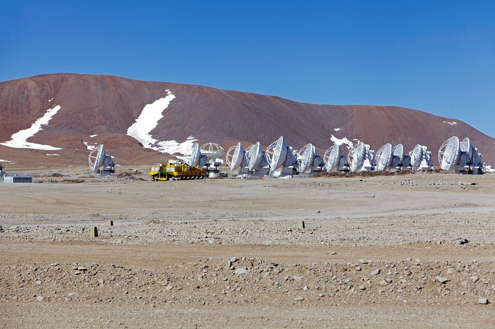

EL CUADERNO DE Alejandro · ASTRONOMÍA Y CÓDIGO
Un cuaderno para
tocar el cielo.
Historias científicas que no terminan en una fórmula: atlas vivos, órbitas que puedes perturbar y preguntas que se dejan explorar.
Abrir los experimentos ↓QUIÉN ESTÁ DETRÁS
Soy Alejandro Mus.
Astrofísica, radiointerferometría y reconstrucción de imágenes.
Trabajo en radiointerferometría y reconstrucción de imágenes astronómicas, con interés en los núcleos activos de galaxias y las observaciones de muy larga base en radio y ondas milimétricas. Me formé en la Universitat de les Illes Balears y en la Université Paris-Saclay, y me doctoré en la Universitat de València en 2023. Aquí comparto el lado más práctico de esas preguntas: cómo observamos el cielo, qué podemos deducir de las medidas y dónde están los límites de nuestras imágenes.
INVESTIGACIÓN
Preguntas que se
convierten en trabajo.
ENTRADAS INTERACTIVAS
Más maneras de mirar
el cielo.
ECLIPSES · GEOMETRÍA · TIEMPO
La sombra que vuelve.
Recorre las 181 familias Saros, abre sus mapas y descubre por qué un eclipse casi se repite cada 18 años. Entrar al atlas ↗GRAVEDAD · MOVIMIENTO · CAOS
El tercero cambia las reglas.
Juega en 3D con dos y tres cuerpos, observa el espacio de fases y lanza un observatorio hacia L2. Entrar al laboratorio ↗MALLORCA · FASES · HORIZONTE
La Luna desde aquí.
Elige un municipio y una fecha. Descubre la fase lunar, las horas de salida y puesta y su altura máxima sobre tu horizonte. Explorar la Luna ↗
RADIOASTRONOMÍA · SEÑAL · IMAGEN
Muchas antenas.
Una mirada.
Diseña un interferómetro, mueve sus antenas y comprueba cómo cambia la imagen del cielo. Del plano de medidas a una reconstrucción con sus límites a la vista.Construir el instrumento ↗Fotografía de ALMA: ESO · CC BY 4.0. Recorte de encuadre en la tarjeta.
ENTREVISTAS Y CHARLAS
La ciencia
en conversación.
EL CUADERNO
La intuición también es una herramienta científica. Cada entrada combina contexto, ecuaciones y una simulación que permite preguntar «¿qué pasaría si…?»